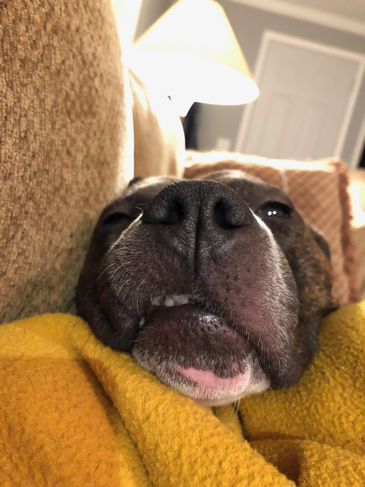

Alex Mann
2018 in an acrostic:
- weddings attended (we've been scratching our heads too, totally thought this was wayyyyyy higher)
-
on the odometer of a new bike! Milwaukee Bicycle Co.: Mettle
__o `\<,_ ....^^^.. (0)/ (0) - 9,341 feet summited atop Kilimanjaro (I would have done 5,895 metres...but I needed a "1")
- major cities visited (Atlanta, Berlin, Chicago, Dar Es Salaam, Halifax, Ottawa, San Francisco, Toronto)
If you've found your way here, take a spell and enjoy a tale of 2018...
The closeout to 2017 (since we last talked) was a mixture of excitement and tumult. In the excitement camp, we had our annual pilgrimage to Dayton Ohio for the Turkey Trot and Thanksgiving. Even more of our extended family was able to join us. Also on the pros, I spent my first Christmas with Natalie's family up in Quebec! I brought cherry birdhouses as gifts for everyone.
On the tumult, we lost my grandfather in his battle with cancer. My grandfather was a pillar in my life, and I cannot imagine the person I would be without his guidance. His memorial was packed with friends and family, a community outpouring.
Later in the year we also said goodbye to Natalie's grandmother at 96 years. She was a true testament to willpower. Finally, my aunt's parents passed just a little while back. All of them were larger than life characters who never ceased to leave us with a story.
To all of these people, you will be dearly missed, but carried on in so many ways.
To clear the gloom, here's a picture of dear Proffessor Wagstaff!

Nat in the last year has been published more, spoken more, and is prepping her first solo curated show. All in all she's balancing her professional success and her ability to be an adult. She has more or less officially lost the ability to cook. Myself and others are more and more convinced that she is intentionally sabotaging the tasks she's given so that she won't be asked to do them. Most recently "how do I cook rice?" Similarly with the dog, she is happy to provide emotionally, but has officially made a joke out of helping to bathe/clean/etc.
In May I traveled to Atlanta to consume tacos, roti, barbeque, and boba tea... Bryan and Charley also graduated from Georgia Tech and Emory respectively.
Bryan no longer has to pretend to be a coastal elite, having now officially moved to LA. He would claim this is for his job doing "space force shite", but he only moved there after Lebron. Suspect.
Charley's summer post graduation was spent continuing to help area refugees in Atlanta. He was accepted into a fellowship and his final presentation was accepted as the new standard for the program. His other job was modeling the cycling caps I made.
Dance moves + obnoxious hats = #viral
The other younger brother and only Little Brother has been a pleasure to spend time with. Highlights from his first year as a little Mann:
- feeding Jules homemade blue slime
- a dinner prepared for Natalie and I all on his own (chopping peppers, boiling pasta, balsamic vinaigrette added to the sauce, fried cheese on meatballs... some assistance with some of these things...)
- figuring out negative numbers all on his own (this was an especially amazing moment for me, as you could almost literally see the gears clicking as he realized in his brain the other half of the number line)
- free tickets to a Milwaukee Bucks game because of his haircut
The new sibling editions are all doing spectacularly. Their dad is now allowed back into the US (he had gone back and forth across the border too much), which is nice! Mother dearest is finishing up at school and will soon be able to wield the voice of God. I presume. Grandmother is also doing well. She's participated in an art show this year and is busy nagging us all from her perch.
As for myself, I'm still cooking, climbing, cycling, and in general creating. As I'm writing this I'm currently (f)unemployed having resigned from my previous job. The opportunities afforded due to this "free" time have been enormous and I can hardly wait to wake up each day due to the possibilities! Making hats, shoes, internet companies, recipes, training the dog to jump over bicycles, blah blah blah.
With that, we look forward to another year and the chance to see everyone soon.
To my friends, you know who you are.
Cheers,
Alex